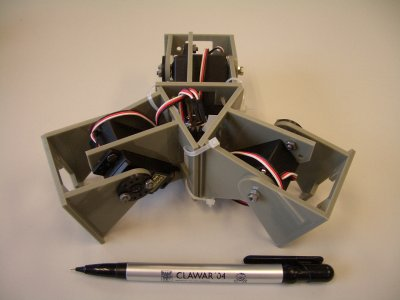

Minicube-3 es la configuración mínima con topología de 2 dimensiones. Se puede desplazar en tres direcciones diferentes y rotar en sentido horario y antihorario.
Aquí se puede ver el robot moviéndose hacia adelante y atrás:

Y aquí está rotando en sentido horario y antihorario:

Hola Juan.
En las configuraciones de tipo “snake”, mira tu email por una referencia que te he enviado sobre un libro de neurotecnologías que tiene un capítulo dedicado a “Snake robots for search and rescue”.
salu2.